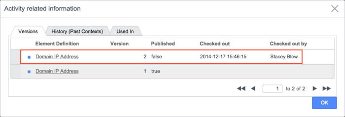

Using Workflow Activities
| |
Note: This article applies to Fuji and earlier releases. For more current information, see Workflow Activities at http://docs.servicenow.com
The ServiceNow Wiki is no longer being updated. Visit http://docs.servicenow.com for the latest product documentation. |
Contents
- 1 Overview
- 2 Viewing Activity Descriptions
- 3 Setting the Maximum Number of Workflow Activities
- 4 Adding an Activity to a Workflow
- 5 Duplicating an Activity
- 6 Correcting Missed Approval Activities
- 7 Managing Transitions
- 8 Managing Conditions
- 9 Understanding Workflow Activity Elements
- 10 Activity Pinning
- 11 Publishing Custom Activities
1 Overview
Activities determine the functionality of the workflow. Each activity performs a different task, such as run a script, send notifications, or request approvals. Activities can succeed or fail, which can result in actions performed by other activities.
For information on how to configure different types of activities, locate the appropriate resource. The following core activities are provided in the base ServiceNow system:
- Approval Activities
- Condition Activities
- Notification Activities
- Timer Activities
- Task Activities
- Utility Activities
- Subflow Activities
The following activities are provided with Orchestration:
- Active Directory Activities
- Orchestration Activities
- PowerShell Activities
- VMware Activities
- Amazon EC2 Activities
- Puppet Activities
If Orchestration is active on your system, users with the proper roles can create custom activities using the ServiceNow Orchestration Activity Designer. Orchestration provides the following templates for creating custom activities that you can upload to the ServiceNow Store:
2 Viewing Activity Descriptions
ServiceNow provides tooltips for workflow activities to help you understand how to use each activity, starting with the Dublin release. To modify activity descriptions, navigate to Workflow > Administration > Activity Definitions and edit the Description field.
To view an activity description in the workflow editor, point to the icon for the activity in the palette. This feature is available for instances using the Eureka or Dublin release.
To view more information from the ServiceNow Wiki, double-click an activity on the canvas and click the help icon in the title bar of the Activity Properties window.
3 Setting the Maximum Number of Workflow Activities
This setting allows you to estimate the number of executing activities contained in your workflow to prevent runaway processing loops. The number of executing activities in a workflow context is the sum of the entries in the activity history list and the currently executing activities. When the workflow reaches the maximum number of executing activities allowed by this setting, the workflow stops. The default maximum setting is 100. Use a setting that is at least 10% greater than the total number of executing activities you anticipate in your workflow. Make sure you include activities such as turnstile and rollback that cause the workflow to repeat processing.
To change the maximum number of workflow activities:
- Navigate to Workflow > Workflow Editor.
- Check out a workflow.
- In the title bar, click the menu icon and select Properties.
- In releases prior to Fuji, click the gear icon and select Properties.
- In the Max activity count, enter a value that accommodates the expected number of executing activities for the workflow.
4 Adding an Activity to a Workflow
To add a workflow activity, drag it from the Core, Packs, or Custom tab onto the canvas and drop it on a transition line in the workflow body. The transition turns blue when it is connected to the new activity. The designer adds the activity to the flow at that point and displays the property form for the new activity. Create any additional conditions needed for the activity and ensure that all exits are connected. Run the workflow validation tool prior to publishing to detect missing or disconnected transitions that can cause a workflow to hang.
| |
Note: All activity records have a Table value. If this value is Global, the activity is available for use with any workflow regardless of the table selected in the workflow properties. Activities that identify a specific table appear in the palette only if the table configured for the workflow matches or extends the table identified in the activity. |
{kind=link}
5 Duplicating an Activity
- Right-click the activity and select Copy Activity.
- Double-click the copy and configure the properties appropriately.
- Move the activity to its location in the workflow and add transitions.
{kind=link}
{kind=link}
6 Correcting Missed Approval Activities
While a workflow is in an active context, an approval activity can inadvertently skip to the next activity for the following reasons:
- The approval user or group is missing or invalid (for example, sys_id).
- The approval user or group became inactive after the approval record was created.
- The activity is a dot-walked field, such as current.opened_by.department.manager, and it has a missing or invalid approval user or group.
- The business rule on the table that is associated with the workflow is invalid.
To correct missed approval activities:
- Navigate to Workflow > Live Workflows > All Contexts.
- Click the workflow ID that is incorrectly processing approval activities.
- Click Show Workflow.
- Review the portion of the workflow that executed, and then do one or more of the following:
- Verify that after approval, the workflow progressed to the next activity. If a workflow failed to progress, check the business rules. For more information, see Debugging Business Rules.
- Point to each processed approval activity to find activities where the State is Finished and Result is Skipped.
- Navigate to Workflow > Workflow Editor and open the workflow.
- Double-click the skipped activity, and then click Users or Groups.
- Assign an active user or group for the approval activity. For more information, see Workflow Error Handling.
7 Managing Transitions
Transitions define the processing path of the workflow, depending on conditions defined in each activity. All conditions in an activity must have a transition, and all transitions must have a connection to another activity or to the End activity. Run the workflow validation tool prior to publishing to detect missing or disconnected transitions that can cause a workflow to hang.
7.1 Adding Transitions
You can drag and drop an activity directly onto a transition line to connect it to the adjacent activities, or you can drag the activity to an open area in the canvas and create the transitions manually.
7.1.1 Examples
In this example, two activities are linked by a transition.
{kind=link}
To add an activity, drag it from the palette and drop it between the existing activities. The system updates the transitions automatically to reflect the new sequence.
{kind=link}
To add a transition to an existing activity, click the yellow square on the right side of the activity condition and drag a connector to the next task:
{kind=link}
{kind=link}
You can draw multiple transitions from the same activity condition that execute concurrently.
7.2 Removing Transitions
To remove a transition, click to highlight it.
{kind=link}
Then press Delete.
{kind=link}
7.3 Custom Transitions
Controls on the Approval - User activity enable an administrator to add additional workflow transitions to the activity other than the default transitions of Approved or Rejected. Transitions defined in this fashion do not become a permanent feature of the Approval - User activity. After a new transition is configured, that transition must be applied manually to subsequent instances of the activity, where desired. For instructions, see Custom Transitions for the Approval - User Activity.
8 Managing Conditions
Activities come with default conditions that determine which transitions are followed. For example, the Approval - User activity has two conditions, Approved and Rejected.
{kind=link}
8.1 Creating a New Condition
You can use a JavaScript condition check to create custom conditions on Core workflow activities. Right-click the activity and select Add Condition. NOTE: Custom activities do not support this feature.
In the New Workflow Condition dialog box, fill in the fields as appropriate (see table).
{kind=link}
The following fields determine the condition's behavior.
| Field | Input Value |
|---|---|
| Name | The label that is displayed on the workflow. |
| Activity | Name of the activity for which this condition is submitted. This value is populated automatically by the system. |
| Else | Check box to run the transition only if no other transitions run. |
| Event | Check box to run the transition when a specific event occurs. |
| Event Name | An event to trigger the condition. This field is available when Event is selected. |
| Skip during generate | If checked, the Generate activity does not follow this transition to generate approvals or tasks. |
| Condition | A Javascript condition check. The following variables are available:
|
| Short description | Brief description of this condition. |
| Order | Order in which the condition appears in the activity. This is also the order in which this condition is evaluated. By default, the system assigns a new condition the highest order number. |
8.2 Reordering Conditions
To reorder conditions as they appear on the workflow activity:
- Right-click the activity and select Reorder Conditions.
- Drag the conditions to a new position in the list.
- Click OK.
{kind=link}
{kind=link}
8.3 Using the Activity Result Value
The result value specified by an activity controls the condition through which the activity transitions. Use the result value as part of the Condition field in the activity. For example, if the Condition field of an Approval - User activity contains activity.result == 'rejected', the activity transitions through that condition when a rejection is received from the approver. Result values are set in the Script field of the activity definition.
9 Understanding Workflow Activity Elements
Each activity can specify a number of elements that control the behavior of the activity or are controlled by the activity. Not all activities specify all possible elements. See the Overview for links to the activities provided by ServiceNow. Each activity description includes a detailed explanation of the specific elements offered by that activity.
| Element | Description |
|---|---|
| Results | The possible activity.result values. The activity result usually determines which condition the activity transitions through. |
| Scratchpad Entries | Scratchpad variables the activity depends on to run, or variables the activity writes to the scratchpad. |
| Input Variables | Values that control the behavior of the activity. Fields to set these values appear on the Activity Properties form when a new activity is added to a workflow. See Activity Variables for more information. |
| Conditions | Determines which transition the activity follows after completing. See Managing Conditions for more information. |
| States | Determines how the workflow handles the record being executed. |
10 Activity Pinning
Users with the workflow_admin role can pin a custom activity to prevent the system from automatically updating that activity when a new version is downloaded from the ServiceNow Store. An administrator can pin or unpin individual activities or set pinning within workflow properties that control the versions used for all the activities in that workflow. This can result in two workflows using different versions of the same activity. Workflow administrators can manage ServiceNow Store updates starting with the Fuji release.
| |
Note: Activity pinning and unpinning applies to the custom activities downloaded from the ServiceNow Store only, and does not apply to newly published activity definitions made locally on your instance. To make use of these locally updated custom activities, you must check out your workflow and manually add the activities. |
10.1 Activity Level Pinning
Set pinning at the activity level to control versioning for that activity only. The activity uses this setting unless it is overridden by a different setting in a workflow.
- Navigate to Workflow > Workflow Editor.
- Open the workflow containing the activity whose version you want to control.
- Check out the workflow.
- Right-click the activity and select the appropriate option:
- Pin Activity: Prevents the activity from automatically updating when a new version is available. Pinned activities are labeled Out of date when a new version is available.
- Unpin Activity: Allows the activity to automatically update to the latest version. Unpinned activities are updated when a new version is available.
- Update Activity: Allows you to manually update a pinned activity to the latest version.
- Publish the workflow.
10.2 Workflow Level Pinning
Pinning at the workflow level overrides individual settings for all activities in that workflow. This action does not change the setting on the activity itself, which might use a different setting in another workflow. The default setting in the workflow properties uses the pinning setting of each activity.
- Navigate to Workflow > Workflow Editor.
- Open a workflow and check it out.
- Click the Properties icon in the title bar.
- Select one of these pinning options from the Activity pinning field.
- Set by activity: Allows all activities in the workflow to use their own pinning settings. This is the default pinning option.
- Pin all activities: Pins all activities in that workflow to their current version.
- Unpin all activities: Allows all activities in that workflow to be updated.
- Publish the workflow.
10.3 Identifying Out of Date Activities
Pinned activities become out of date when a new version of the activity is downloaded from the ServiceNow Store. The workflow editor highlights a pinned activity with an orange indicator when it is out of date and selects the Out of date check box in the properties form. To update a pinned activity, workflow designers must manually update it.
{kind=link}
10.4 Identifying Updated Activities
The workflow editor displays a green indicator when:
- An unpinned activity has been automatically updated.
- A pinned activity has been manually updated.
{kind=link}
10.5 Manually Updating an Activity
Workflow administrators must manually update pinned activities. The workflow editor displays an orange indicator when the activity is out of date. To manually update an activity:
- Navigate to Workflow > Workflow Editor.
- Open the workflow containing an activity you want to manually update.
- Check out the workflow.
- Right-click a pinned activity and select Update Activity.
- Publish the workflow.
11 Publishing Custom Activities
When a user creates a custom activity and saves or submits it, that activity appears in the Custom and Packs tabs of the designer palette, but is only visible to the user who created it. When configuration is complete, the user clicks Publish, which makes the activity accessible to other users on the instance with the workflow_admin or activity_creator role. Published activities are available for upload to the ServiceNow Store, can be added to workflows, and can be edited by any user with the proper roles. To edit a published activity, click Checkout. When an activity is checked out by a user, only that user can modify it. The fields of a checked out activity are read-only for all other users. When the checked out activity has been modified successfully, the user publishes it again. The system adds a new version of this activity to the Custom tab in the workflow editor palette.
| |
Note: Activities you create and publish are only visible in the Packs tab if they were created in the current application scope. |
11.1 Locked Versions
Problems can arise if an activity version is checked out by a user and not checked back in. This might occur when the user is out sick or leaves the company. An activity in this state cannot be checked out for update. Only a user with the admin role can return a locked activity to a published state.
- Open the workflow editor.
- From the Custom tab, open the activity that is locked.
- Click the menu icon in the title bar and select Versions.
- A list of all the versions of that activity appears. The locked version shows the user who has it checked out.
- 
- Select the checked out version.
- The system opens the record in the activity designer.
- Click the menu icon again and select Force Checkout.
- The activity fields become editable.
- Click Publish.
- The activity is now available to users with the appropriate roles.
{kind=link}